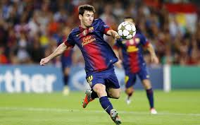
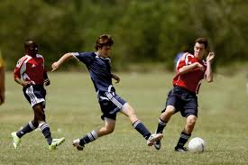

Football is a family of team sports that involve, to varying degrees, kicking a ball to score a goal. Unqualified, the word football normally means the form of football that is the most popular where the word is used. Sports commonly called football include association football (known as soccer in North America and Oceania); gridiron football (specifically American football or Canadian football); Australian rules football; rugby union and rugby league; and Gaelic football. These various forms of football share to varying extent common origins and are known as football codes.
Football is the world’s most popular ball game in numbers of participants and spectators. Simple in its principal rules and essential equipment, the sport can be played almost anywhere, from official football playing fields (pitches) to gymnasiums, streets, school playgrounds, parks, or beaches. Football’s governing body, the Fédération Internationale de Football Association (FIFA), estimated that at the turn of the 21st century there were approximately 250 million football players and over 1.3 billion people “interested” in football; in 2010 a combined television audience of more than 26 billion watched football’s premier tournament, the quadrennial month-long World Cup finals.
Club football reflects the distinctive political and cultural complexities of European regions. In Britain, partisan football has been traditionally associated with the industrial working class, notably in cities such as Glasgow, Liverpool, Manchester, and Newcastle. In Spain, clubs such as FC Barcelona and Athletic Bilbao are symbols of strong nationalist identity for Catalans and Basques, respectively.
